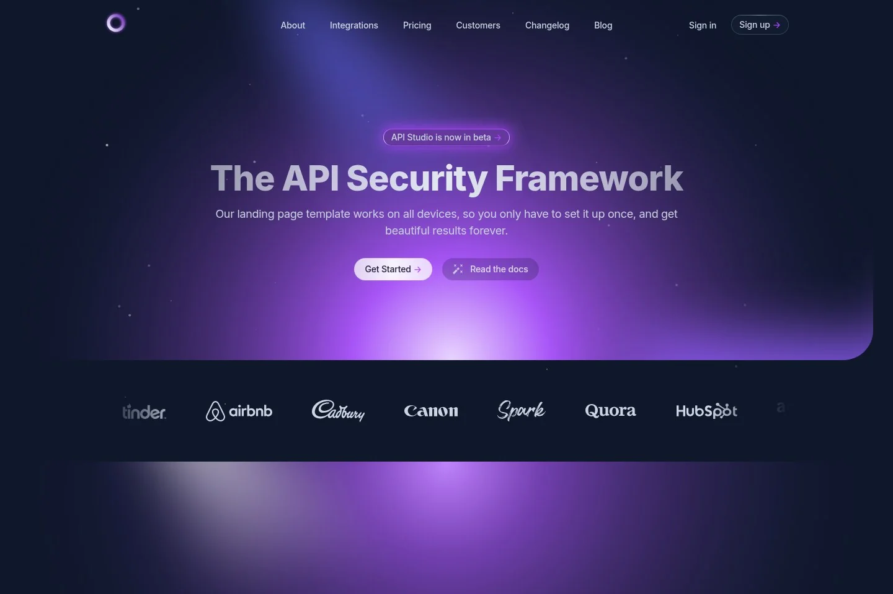

NCIT / DESIGN SHORTLIST
6 个现成模板。直接看真实页面、原生动效，再选你喜欢的方向。
选定后沿用模板的布局与动画，换入星云协智的中英文内容、实拍和协作视频。
启用 JavaScript 可查看视频并保存选择。也可直接浏览以下原模板：
官方演示实录 · 含滚动与点击操作

短录屏用于快速比较；打开原站可以完整体验滚动、鼠标与栏目切换。
自动复制不可用，请手动复制这段文字并发回聊天。